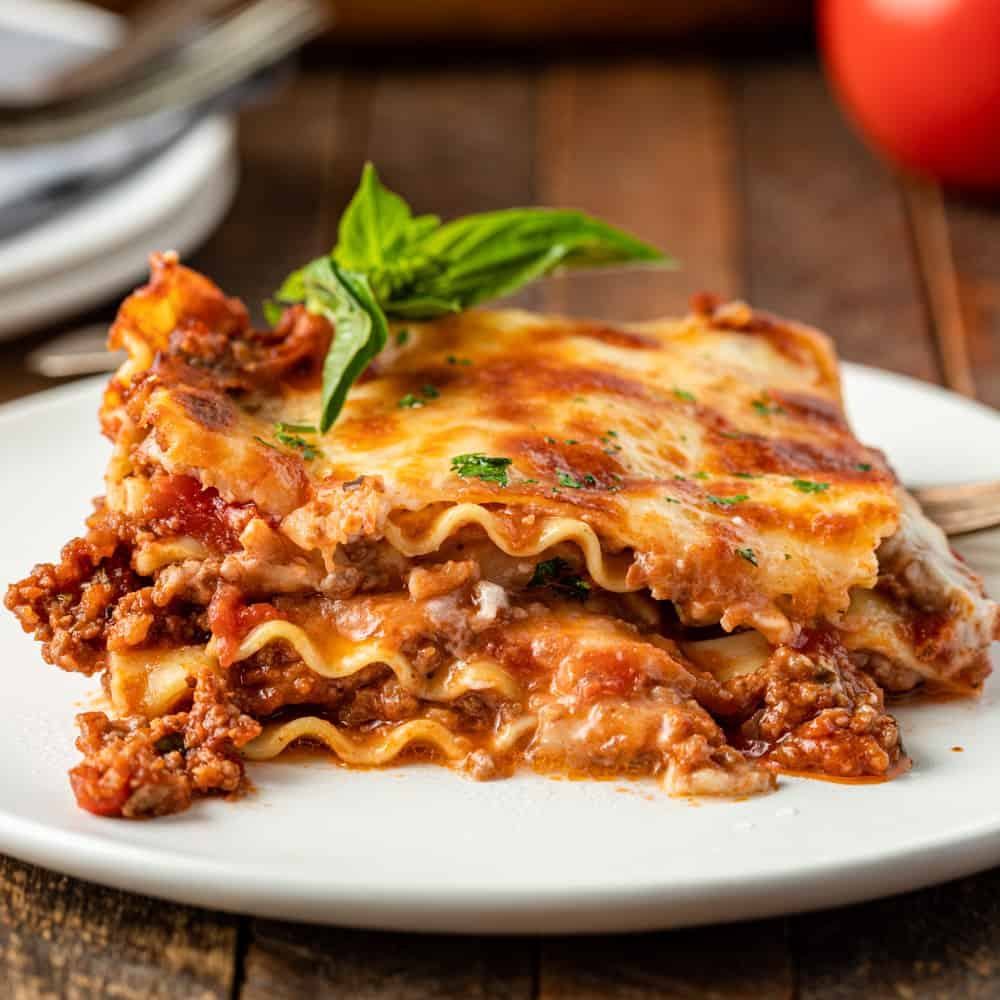

Home
Lasagna Recipe

Description
This lasagna recipe is a classic Italian dish that layers pasta, meat, cheese, and marinara sauce. It's perfect for family dinners or gatherings!
Preparation Time
Prep Time: 30 minutes
Cook Time: 45 minutes
Total Time: 1 hour 15 minutes
Ingredients
- 9 lasagna noodles
- 1 pound ground beef
- 2 cups ricotta cheese
- 2 cups shredded mozzarella cheese
- 1 cup grated Parmesan cheese
- 2 cups marinara sauce
- 1 egg
- Salt and pepper to taste
- 1 teaspoon dried oregano
- 1 teaspoon dried basil
- 1/2 teaspoon garlic powder
- 1/2 teaspoon onion powder
- Fresh basil for garnish (optional)
Instructions
- Preheat the oven to 375°F (190°C).
- Cook the lasagna noodles according to package instructions. Drain and set aside.
- In a skillet, brown the ground beef over medium heat. Drain excess fat.
- Add marinara sauce, oregano, basil, garlic powder, onion powder, salt, and pepper to the skillet. Simmer for 5 minutes.
- In a bowl, mix ricotta cheese, egg, and half of the Parmesan cheese. Season with salt and pepper.
- Spread a thin layer of meat sauce on the bottom of a baking dish.
- Layer 3 lasagna noodles over the sauce.
- Spread half of the ricotta mixture over the noodles.
- Add a layer of meat sauce and sprinkle with mozzarella cheese.
- Repeat layers (noodles, ricotta, meat sauce, mozzarella) until all ingredients are used, finishing with noodles and meat sauce on top.
- Sprinkle remaining mozzarella and Parmesan cheese on top.
- Cover with foil and bake for 25 minutes. Remove foil and bake for an additional 15 minutes or until cheese is bubbly and golden brown.
- Let it cool for 10 minutes before serving. Garnish with fresh basil if desired.